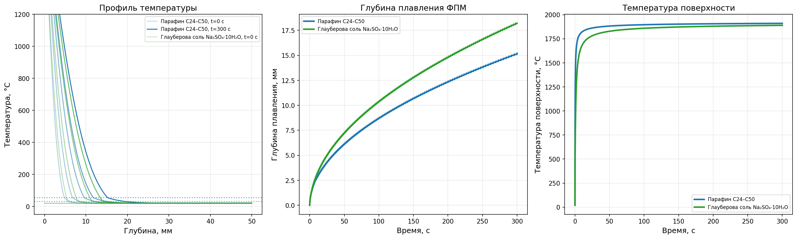

Исследовательский проект
Абляционная защита, применяемая на большинстве современных спускаемых аппаратов, необратимо теряет материал при каждом спуске. После каждой миссии требуется полная замена теплозащитного экрана — это увеличивает стоимость и время межполётной подготовки.
Фазопереходные материалы (ФПМ) способны сохранять массу при циклах «плавление–затвердевание», что делает их перспективными для создания многоразовых теплозащитных систем. Однако систематическое сравнение абляции и ФПМ при одинаковых тепловых нагрузках в открытой литературе представлено ограниченно.
Настоящая работа восполняет этот пробел, предлагая методику сравнения для ранних этапов проектирования.
Количественно сравнить абляционную и фазопереходную термозащиту по массе и толщине; обосновать гибридную схему для многоразовых спускаемых аппаратов.
Аналог «Союз», диаметр ~2 м. Тепловой поток 1,2 МВт/м², площадь 3,14 м², время нагрева 300 с.
Поглощаемая энергия: Q = 1,13 ГДж
| Параметр | Парафин C24–C50 | Na₂SO₄·10H₂O | Аблятор AVCOAT |
|---|---|---|---|
| Удельная теплота, кДж/кг | 200 | 254 | 20 000 |
| Плотность, кг/м³ | 800 | 1485 | 1400 |
| Объёмная плотность энергии, МДж/м³ | 160 | 377 | 28 000 |
| Масса, кг | 5 650 | 4 450 | 56,5 |
| Толщина | 2,25 м | 0,95 м | 12,9 мм |
| Многоразовость | Да | Условно | Нет |
Численное решение уравнения теплопроводности с фазовым переходом. Метод конечных разностей, Python.
| Параметр | Парафин | Соль |
|---|---|---|
| Глубина плавления | ~15 мм | ~17,5 мм |
| Толщина по стац. расчёту | 2 250 мм | 950 мм |
| Отношение | 150 раз | 54 раза |
| Температура поверхности | ~1900 °C | ~1850 °C |
За 300 с расплавится только 0,5–2% от стационарной толщины

Профиль температуры, глубина плавления и температура поверхности
Сравнение затрат за 10 полётов при консервативных допущениях.
| Статья затрат | Чистый аблятор | Гибридная схема |
|---|---|---|
| Материал аблятора | 80,9 млн руб. | 48,5 млн руб. |
| Материал ФПМ | — | 1,1 млн руб. |
| Обслуживание (9 циклов) | 3 031,1 млн руб. | 1 970,2 млн руб. |
| Экономия на выведении массы | — | −1 049,8 млн руб. |
| Итого | 3 112,0 млн руб. | 2 019,8 млн руб. |
Экономия: ~1,1 млрд руб. за 10 полётов. При 30 полётах — ~3,2 млрд руб.
D ∝ √m
Диаметр купола пропорционален корню квадратному из массы аппарата.
| Параметр | Чистый СА | С ФПМ-подслоем | Изменение |
|---|---|---|---|
| Масса | 2 900 кг | 4 980 кг | +72% |
| Площадь купола | 1 105 м² | 1 898 м² | +72% |
| Диаметр купола | 37,5 м | 49,2 м | +31% |
| Масса парашюта | ~100 кг | ~170 кг | +70% |
Адаптация гибридной схемы для других тел Солнечной системы.
| Параметр | Земля | Марс | Титан |
|---|---|---|---|
| Атмосфера | N₂/O₂ | CO₂ (95%) | N₂/CH₄ |
| Давление | 1 атм | 0,006 атм | 1,5 атм |
| Скорость входа | 7,5 км/с | 6–7 км/с | 6–7,3 км/с |
| Тепловой поток | 1,2 МВт/м² | 1–3 МВт/м² | 2,5–3 МВт/м² |
| Доля радиационного нагрева | <5% | 50–70% | 80–95% |
| Материал аблятора | AVCOAT | PICA | AQ60 |
| Толщина аблятора | ~13 мм | ~55 мм | ~30 мм |
| Толщина ФПМ | ~0,95 м | ~0,79 м | ~1,65 м |
| Применимость гибрида | Частично | Частично | Нет |
Теплозащита — не универсальная задача, а комплексная проблема, требующая индивидуального подхода для каждой планеты.